秋葉原アニメツアーLP
OGP画像 20案
対象ページ：Akihabara Anime Tour（animesenseijp.com/akihabara-tour/）の OGP 画像、新デザイン20案です。案6〜案10は「もっとワクワクさせる、オシャレな感じで」という方向で追加した第2弾、案11〜案15は当たりだった案9（ステッカーポップ型）の系譜で、もっとオシャレに・写真を多く・人がわいわいしている写真を主役に作った第3弾です。案16〜案20は、選ばれた案15（ホワイト・フレーム型）を磨いた第4弾で、ロゴを新しい公式ロゴに、タイトルフォントを Anton に差し替えています。全案 1200×630・実写真使用。本番の og:image はまだ差し替えていません。
番号で選んでください。選ばれた案を本番に設定します。
現行チケット風イラスト
いま本番に入っている og-share-v2。写真なしの「ADMIT ONE」チケット風イラスト。比較用。
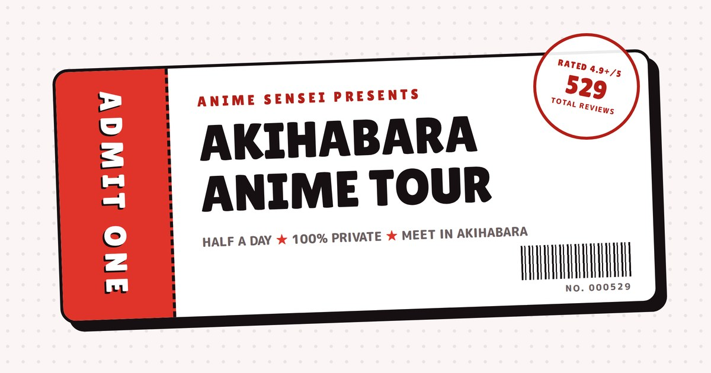
案1夜景フルブリード＋タイポ
秋葉原の夜景を全面に、左下に特大タイトルと赤ピル「PRIVATE TOUR · FULLY IN ENGLISH」。王道タイプ。
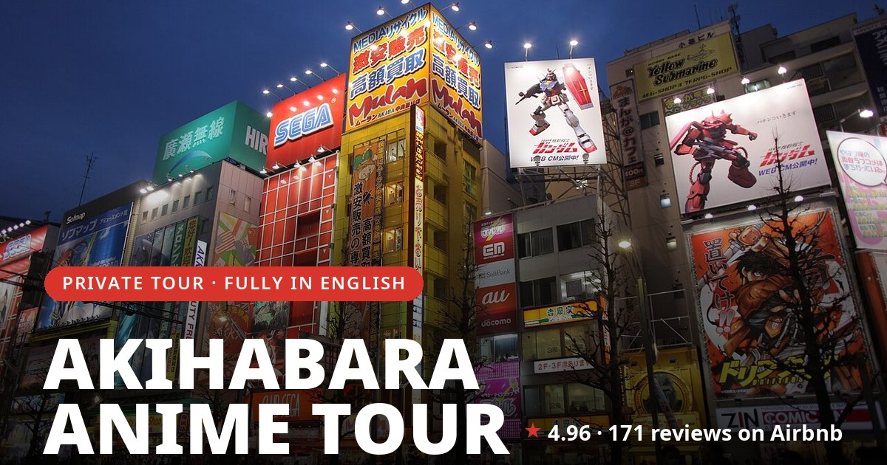
案2写真コラージュ3枚＋黒帯
ゲストとの自撮り・ガシャポン・フィギュア展示の3枚＋黒帯タイポ。ツアーの中身が一目で伝わるタイプ。
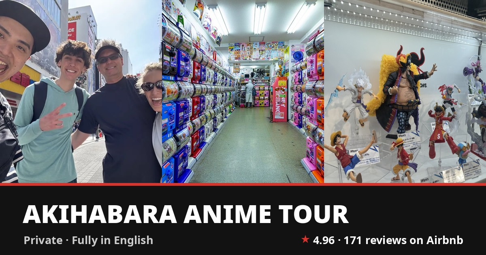
案3黒ベース＋公式ロゴ＋ラジオ会館
公式バーストロゴ（正本ファイル）主役に、右はラジオ会館の夜景。ブランド重視のタイプ。
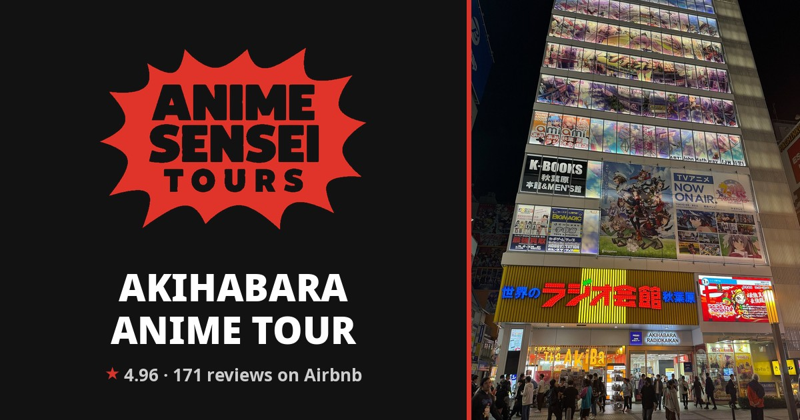
案4集合写真フルブリード・文字最小
ゲストとの集合写真を全面に、文字はタイトルと一言だけ。楽しさ・雰囲気重視のタイプ。
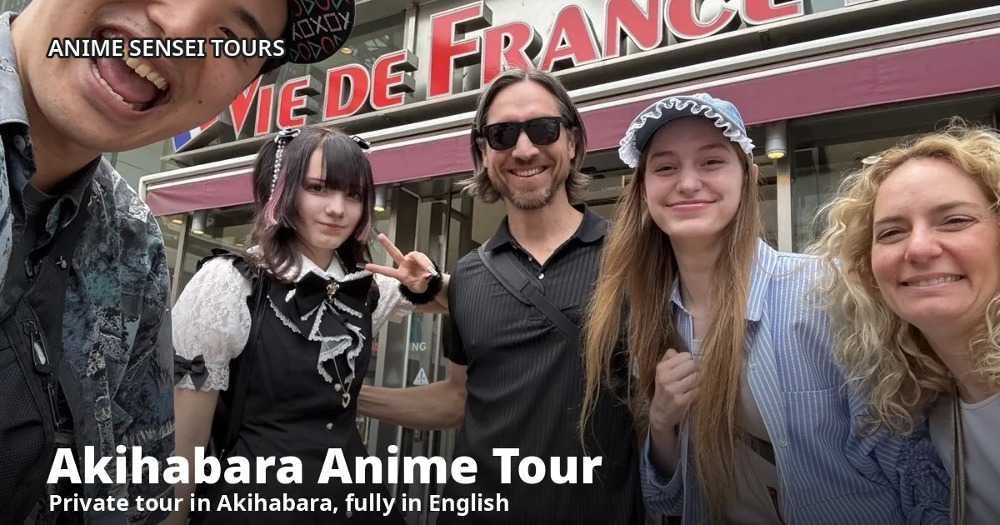
案5紙色ベース＋写真フレーム
紙色 #F1EFEA に高架下の路地写真を黒枠で額装、黒タイポ＋評価ピル＋公式ロゴ。eatmap系の明るいタイプ。

追加5案
案6ネオン・スラッシュ
秋葉原の夜景に赤い斜め帯を切り込み、タイトルもイタリックで斜めに走らせた、スピード感と熱量のあるタイプ。
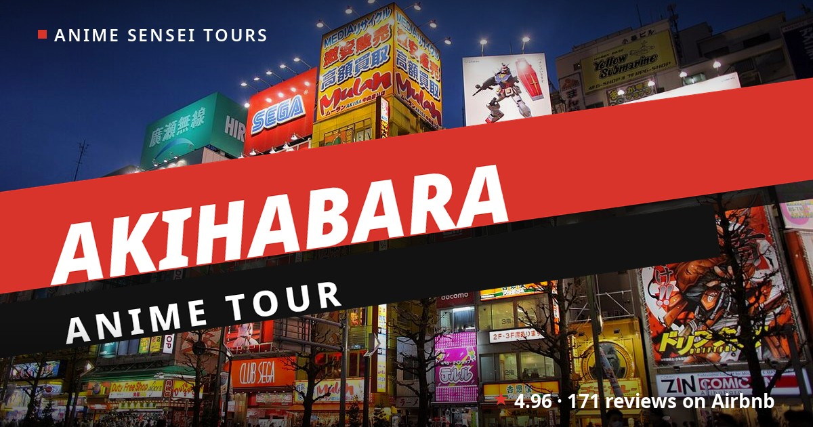
案7雑誌の表紙型
ラジオ会館の壁面写真を表紙に、マストヘッド＋カバーライン＋スターバーストの評価バッジで、雑誌の表紙の文法で組んだタイプ。
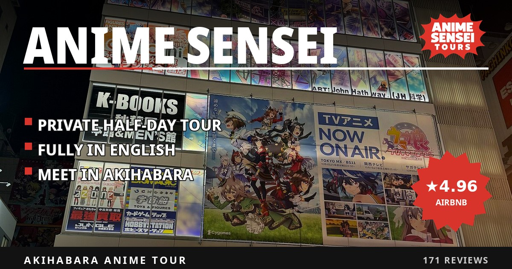
案8映画ポスター型
ゲストとの集合写真をシネマティックに。上下のレターボックス＋中央の大タイトル＋下部のクレジット風ラインで、映画ポスターの文法に。
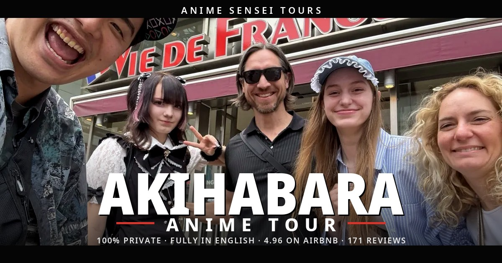
案9ステッカーポップ型
ビビッドな黄色の地に、ガシャポンとフィギュアの写真ステッカー、公式ロゴと評価バッジを散らした、遊び心のあるタイプ。
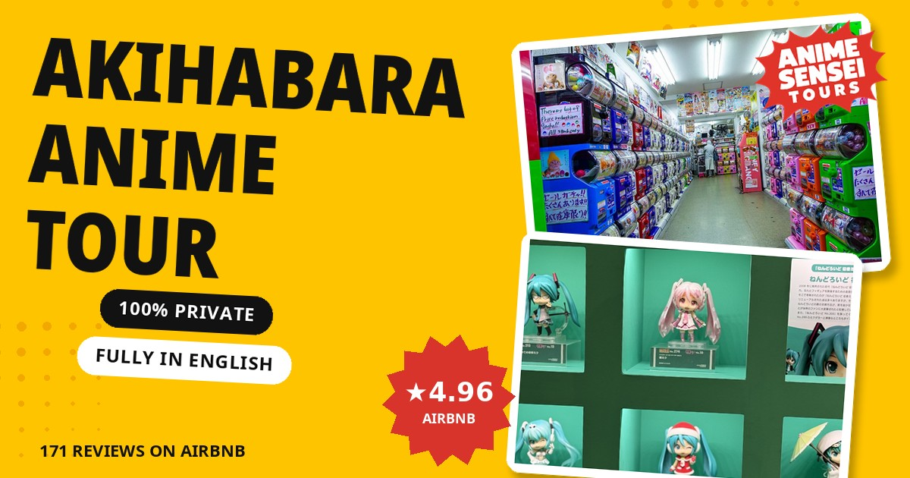
案10デュオトーン・ポスター型
秋葉原の夜景を赤系デュオトーンに落とし込み、紙色のフレームと大タイポで、映画ポスターのように仕上げたタイプ。
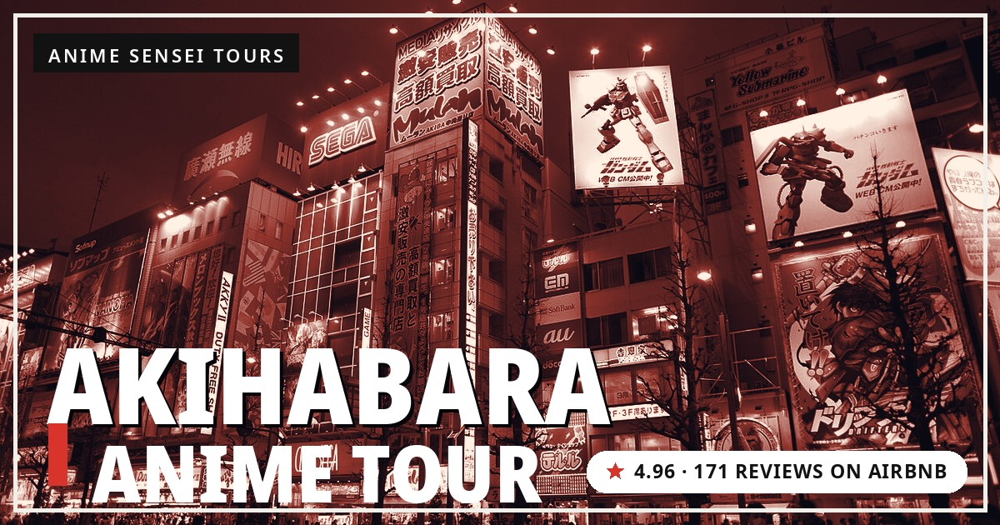
追加5案（案9の系譜）
案11クリーム・グリッド型
柔らかいクリーム地にタイポを整え、ゲストとの写真4枚をグリッド寄せに配置。案9の賑やかさを残しつつ、余白と整列で洗練させたタイプ。
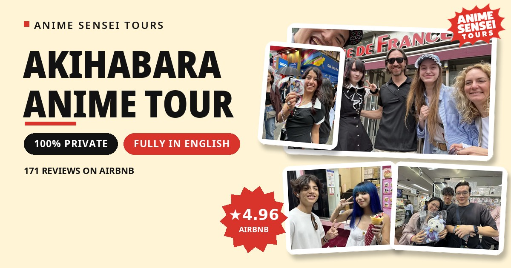
案12イエロー・スキャッター洗練型
案9の黄色地＋写真ステッカー散らしを整えた進化版。集合自撮りを主役に、人写真4枚＋フィギュア1枚を散らしたタイプ。
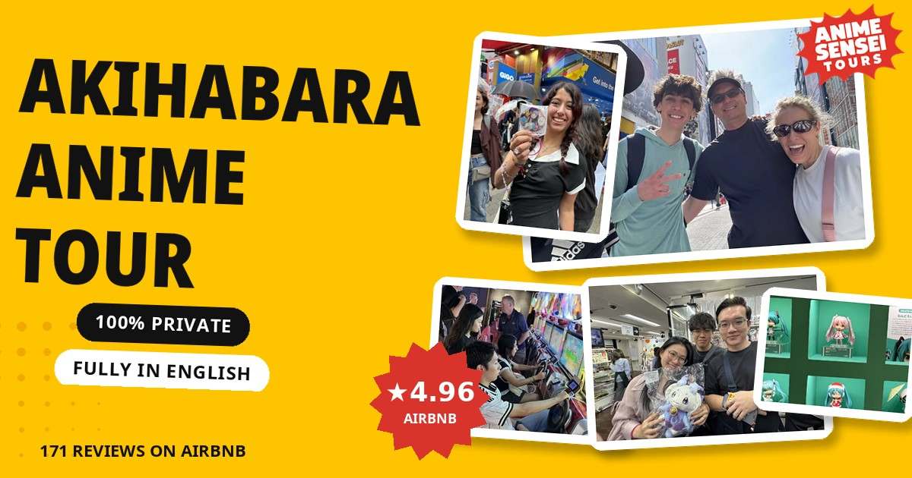
案13ミント・バンド型
爽やかなミント地。上部にタイトルのバンド、下段に人の写真4枚を整列させた、清潔感のあるタイプ。
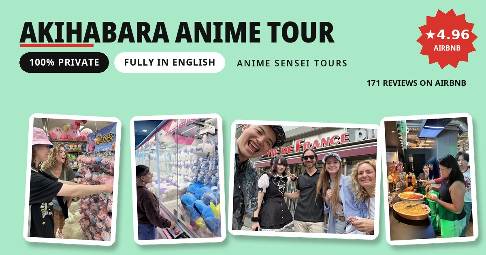
案14スカイ・ポラロイド型
空色地に特大の集合写真ステッカーを主役に据え、小さなステッカー3枚を添えたタイプ。人の楽しさが一番大きく伝わるタイプ。
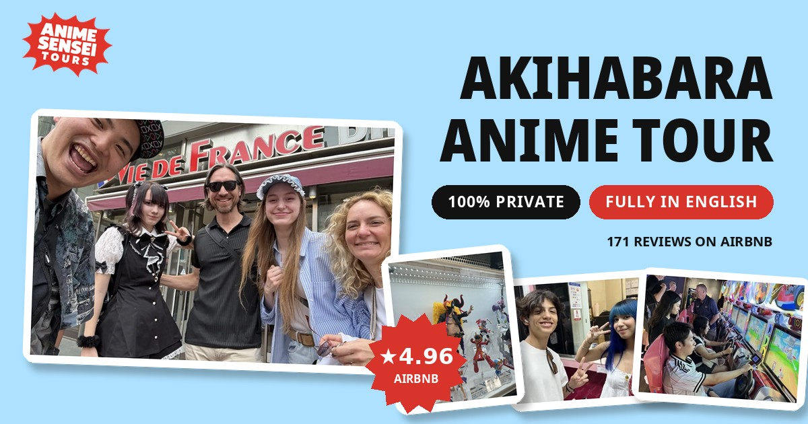
案15ホワイト・フレーム型
白地＋黒フレームの編集デザイン。写真は人の笑顔3枚に絞り、タイポと余白で魅せる一番すっきりしたタイプ。
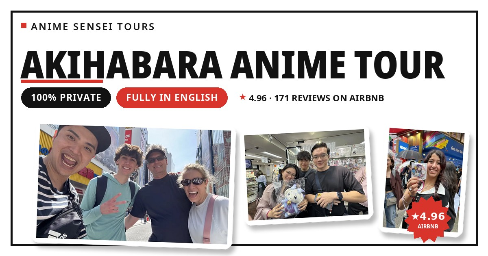
追加5案（案15の磨き）
案16王道磨き型
案15の骨格そのままに、新ロゴ＋Antonで締め直した王道版。写真は傾けず真っ直ぐに並べ、タイトル下の赤ラインとピルで整えたタイプ。
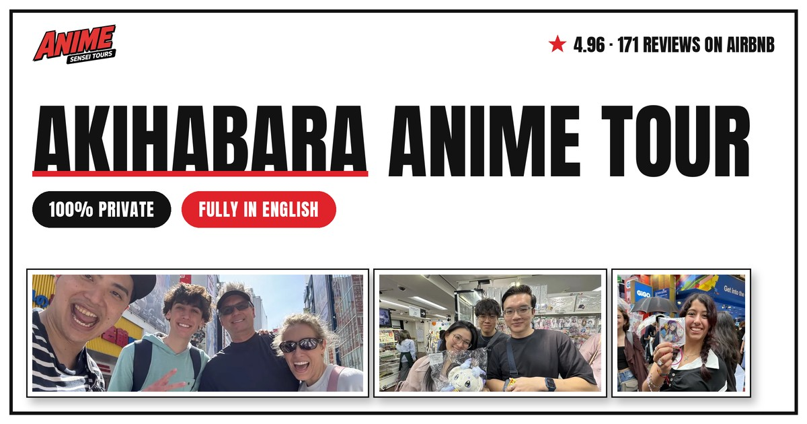
案17左右分割型
左にロゴ・タイトル・ピル・評価、右に写真3枚を置いた左右分割。雑誌の誌面のような構成のタイプ。
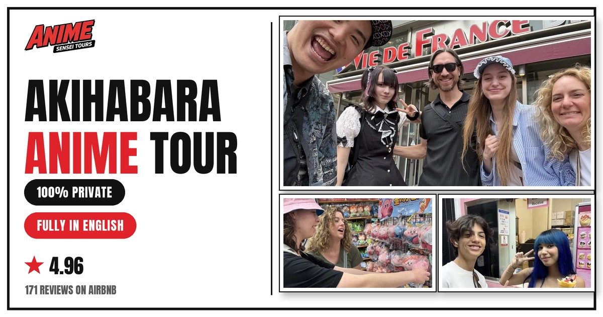
案18写真主役・下帯型
笑顔の写真3枚を大きく見せ、タイトルと評価は下の黒帯に集約。写真の楽しさが主役のタイプ。
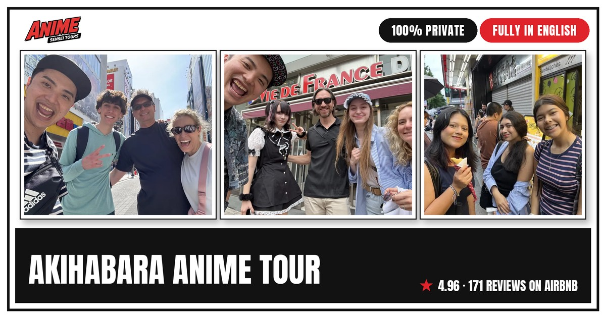
案19タイポ主役型
特大のタイトルタイポが主役。右に縦長の笑顔写真を1枚大きく置き、余白で魅せるタイプ。
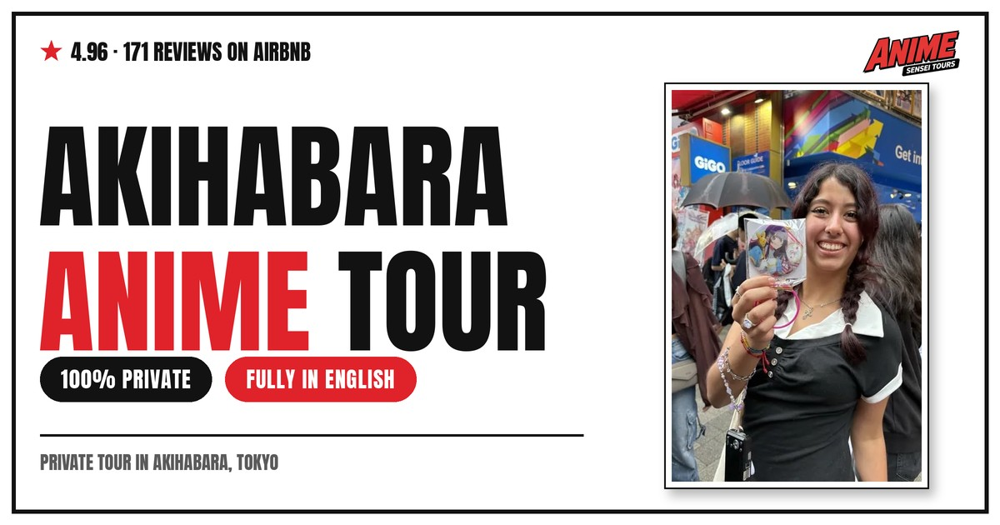
案20グリッド誌面型
縦書きの日本語を添えたグリッド誌面型。写真は大1枚＋小2枚の非対称グリッドで、編集デザインの色が一番濃いタイプ。
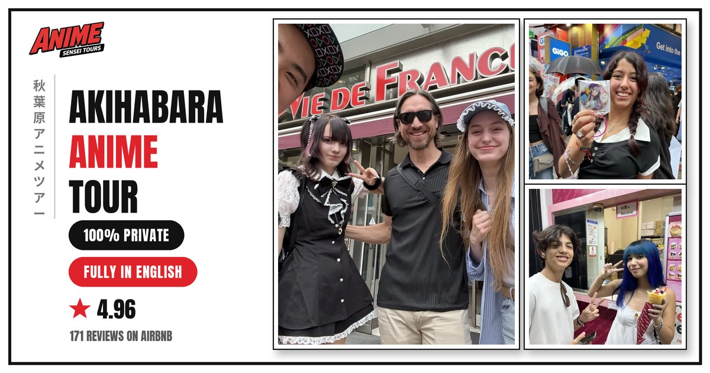